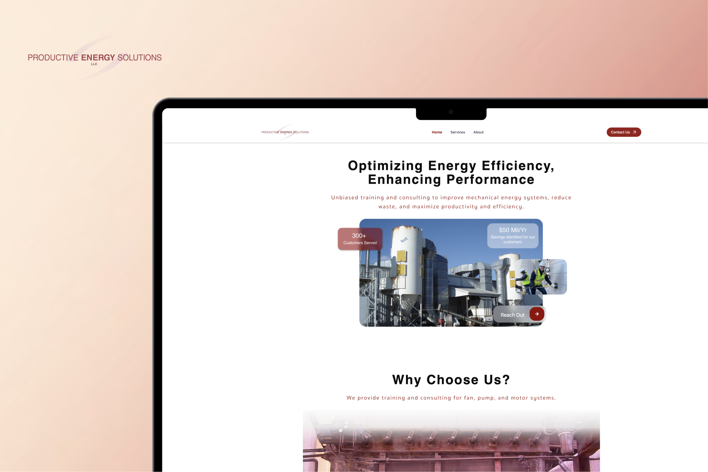
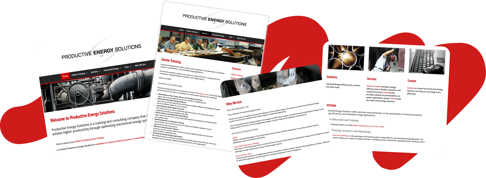
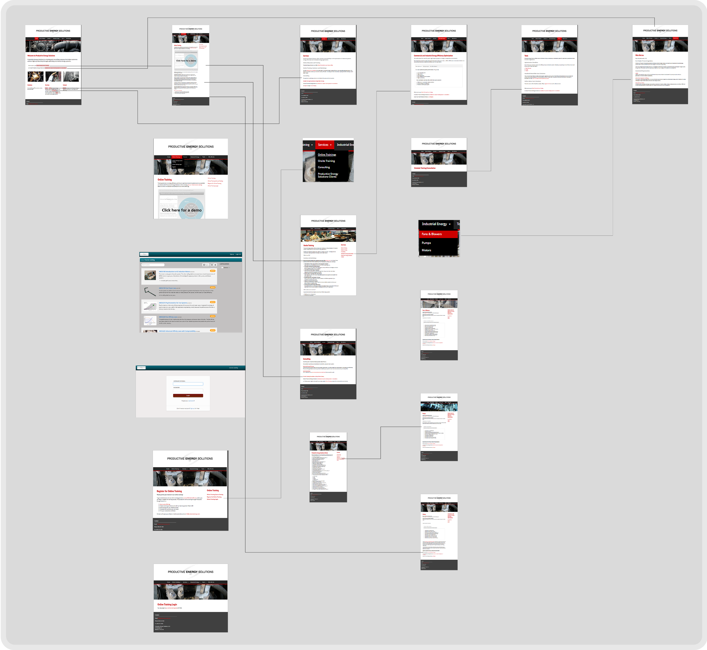
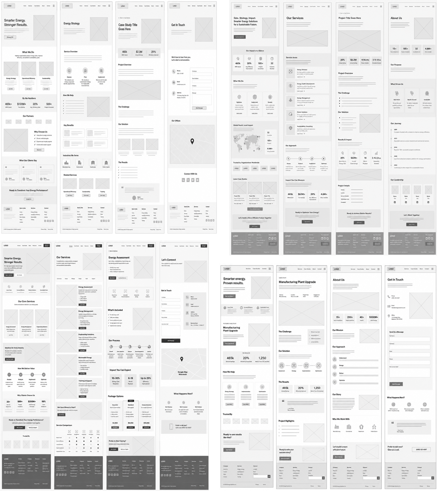

What is Productive Energy Solutions?
Productive Energy Solutions has been optimizing industrial fan, pump, and blower systems since 1998. They offer online courses and in-person consulting to engineers and facility managers across North America.

Web Design · Visual Design
A B2B energy consulting firm had been invisible online for over a decade. I led the end-to-end redesign of their website to give them a presence that reflects their expertise and converts the right visitors.
Productive Energy Solutions has been optimizing industrial fan, pump, and blower systems since 1998. They offer online courses and in-person consulting to engineers and facility managers across North America.
I led the UX and visual design across research, information architecture, interaction design, prototyping, and the final website direction.
Context
A company with 25 years of expertise, and a website that showed none of it.
Unless you already knew their name, you would never find them. Their website had not been updated in over a decade, search engines could barely read it, dozens of links were broken, and there was no clear way for a visitor to understand what the company did or how to reach them.

Before — outdated homepage, training, service, and contact pages with unclear hierarchy and scattered navigation
Problem
The site was actively working against the business.
01
The outdated platform meant search engines could not index the site. New clients had no way of finding the company online.
02
Dozens of dead links across the site. Any visitor who did land there quickly lost trust and left.
03
Services, training, and tools were scattered with no information hierarchy guiding users toward contact.
Research
Getting clear on the space before touching anything.
Patterns across the industry
What the client was actually dealing with
Engineers and facility managers, mostly 35 and older
Busy, technically literate people who are skeptical by default and make quick judgments about credibility. They scan before committing to read, and leave if the site does not answer their first question within a few seconds.
Design Approach
The old site had grown organically over years without anyone stepping back to look at it as a whole. Before opening Figma, I mapped every existing page and connection. Pages nested inside pages, navigation branched in too many directions, and there was no clear route from landing to contact. The redesign started by simplifying all of that down to four core sections.

Over 20 pages, overlapping navigation, no clear primary path

Simplified to Home, Services, About, and Contact
With the structure locked in, I moved into design exploration. Each page went through multiple iterations before committing to a direction.

Figma overview — multiple iterations across Home, Services, About, and Contact
A key design decision
Clarity over novelty.
The client asked for an interactive game on the homepage. After mapping it against the user profile, A/B testing, and walking through the research together, we agreed it created friction exactly where users needed to assess credibility and find a path to contact.
Rejected
Engaging in isolation, but it added friction at the moment users needed clarity.
Chosen
A fast, impact-driven hero followed by dedicated modules designed to earn trust.
Solution
The original site had more than 20 pages with overlapping navigation and repeated information. I consolidated the structure into four core sections so visitors could quickly understand the company, compare services, and move forward without digging through outdated pages.
For a technically skeptical B2B audience, credibility had to appear inside the page flow instead of being hidden on a separate About page. The redesign uses evidence modules like client geography, impact numbers, testimonials, and industry-specific language to make expertise visible while people scan.
The new homepage leads with a direct value statement, surfaces impact numbers early, and gives visitors a clear next step. Instead of making users interpret the site structure themselves, the redesign guides them toward the most useful action: learning about services, exploring training, or contacting the team.
Results
Reflection
Saying no to the game was probably the most important design decision on this project. The client was excited about it, and it took real effort to redirect that energy somewhere more useful. It taught me that advocacy for the user is most valuable precisely when it conflicts with what the stakeholder wants. The research gave me the language to have that conversation without it feeling like a rejection.
This project also made clear how much work trust is doing in B2B design. The animated map and testimonials were not the most visually complex parts of the site, but they became the most consequential. Twenty-plus new clients reaching out within three months confirmed it: for this audience, credibility is the product.
Back to all work